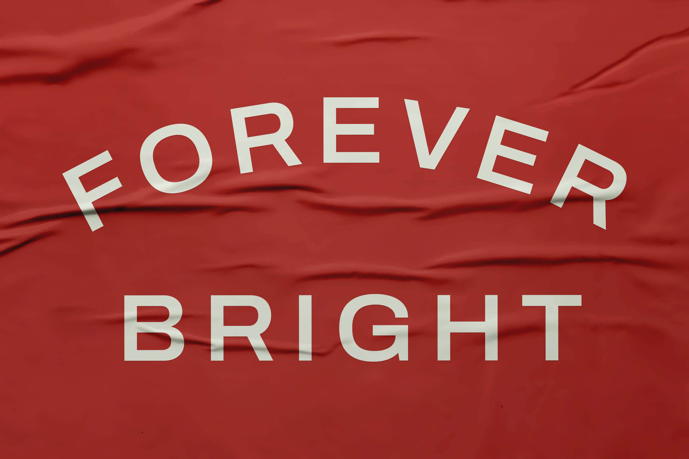
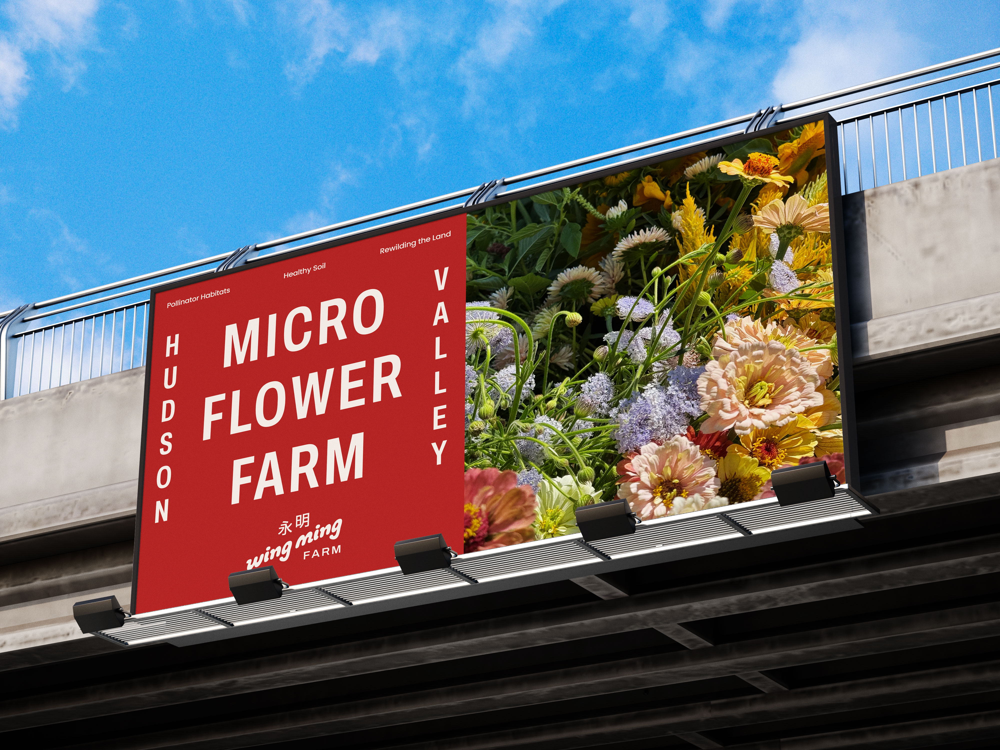
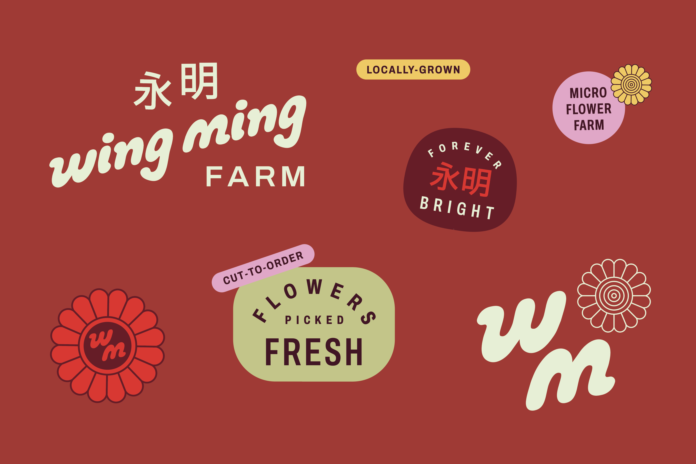
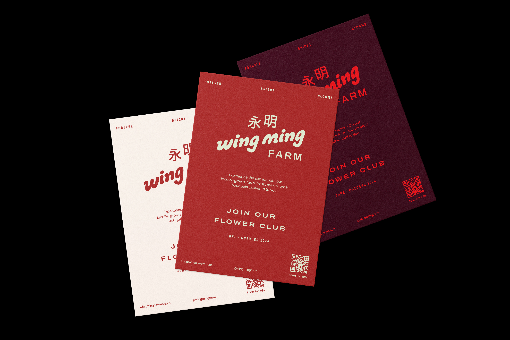
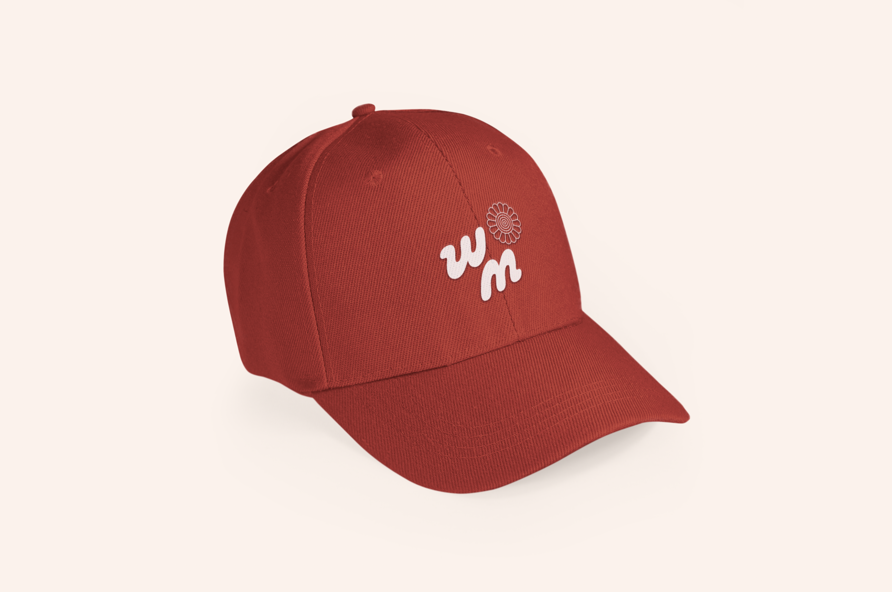

Brand Identity
Logo
Guidelines
Print
Web
Signage
In Cantonese, 永 means permanence, the kind that outlasts seasons, trends, and time. 明 is light. Clear, warm, unmistakable. Together they are forever bright. Wing Ming came to the Hudson Valley flower market with no reputation, no referrals, and no history. Only this name and a goal to create a flower farm.
Wing Ming (永明) is an Asian, woman-owned flower farm in the Hudson Valley growing native perennials and hardy annuals in support of pollinator health and ecological reciprocity. The brief was to build a brand capable of carrying both the farm's environmental mission and the personal significance of its name. Wing Ming was Rosa's fathers business name in Macau.
The work produced a complete logo suite and brand system — covering color, type, layout, and art direction principles across digital and physical contexts. The identity needed to feel grounded without being rustic, and considered without losing approachability.




In Cantonese, 永 means permanence, the kind that outlasts seasons, trends, and time. 明 is light. Clear, warm, unmistakable. Together they are forever bright. Wing Ming came to the Hudson Valley flower market with no reputation, no referrals, and no history. Only this name and a goal to create a flower farm.





Wing Ming (永明) is an Asian, woman-owned flower farm in the Hudson Valley growing native perennials and hardy annuals in support of pollinator health and ecological reciprocity. The brief was to build a brand capable of carrying both the farm's environmental mission and the personal significance of its name. Wing Ming was Rosa's fathers business name in Macau.